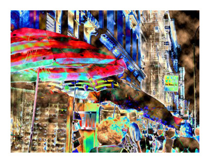

Ronnie Caplan
Canal Street Rainstorm
 |
|
|
|
(1 of 12) |
 |
|
|
|
(1 of 12) |
The artist Ronnie Caplan states: "I am an event producer / creative director / writer who travels extensively because of my work. Always having my digital camera with me, I've finally decided to express myself beyond the realm of the stage, and from within the confines of experiential live events and corporate theatre . . . thus creating stunning, fantastical and wonderful, original (limited edition) works of art for private collectors, leisure groups, hotels, restaurants, corporations and art aficionados / aesthetes everywhere.'Each piece is like a hissing cobra, about to piercingly strike out from a lackluster landscape.'
My photos have been taken in LA, NYC, Montreal, Puerto Rico, etc, then transformed / variegated / modulated / altered on my laptop w/ Photoshop - the intent is to print right onto canvas and / or fine papers as limited edition giclees. . . I am happy and able to custom - design to specific orders and commissions.
Just imagine the intersection of your locale and imagination. . .
Presented in a myriad of mixed medias and emotions, with modish subjects and series - my work ultimately evokes poignant ruminations on art in the streets, with new portrayals of hackneyed tourismo topics, found rhapsody in the everyday mundane scene, and, by looking ever so closely, finding buried beauty and covert charm where no one can see it. Composition and color play a large part in unearthing the esoteric charm and symmetry everywhere. . . my work is portrayed in crazily- converted, FUN pop culture-oriented ways and means.
'A perceptible pastiche of visual harmony. . . with perfect pitch. '
My work fits into a wide variety of disparate environments, finishing off any desired ambiance with distinctive nonpareil. . . my unique photo- paintings are proving extremely popular with a very wide audience demographic."